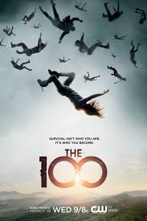

SCIENCE FICTION
Westworld (2016- )
"These violent delights have violent ends."
This science fiction western series from Jonathan Nolan and Lisa Joy was inspired by Michael Crichton's Westworld (1973) and is set at a Wild West theme park created by Dr. Robert Ford (Sir Anthony Hopkins) with human-like androids, where guests are encouraged to indulge their fantasies and desires.Westworld isn't your typical amusement park. Intended for rich vacationers, the futuristic park, which is looked after by robotic "hosts", allows its visitors to live out their fantasies through artificial consciousness. No matter how illicit the fantasy may be, there are no consequences for the park's guests, allowing for any wish to be indulged.
Genres : Drama,Mystery
No. of Seasons: 3
Available on Disney+Hotstar
Review: 8.7/10 ⭐
The Mandalorian (2019- )
"I'm a Mandalorian. Weapons are a part of my Religion."

After the stories of Jango and Boba Fett, another warrior emerges in the Star Wars universe. The Mandalorian is set after the fall of the Empire and before the emergence of the First Order. We follow the travails of a lone gunfighter in the outer reaches of the galaxy far from the authority of the New Republic.
Genres : Action,Adventure
No. of Seasons: 1
Available on Disney+Hotstar
Review: 8.7/10 ⭐
Doctor Who (2005- )
"The Trip of the Lifetime!"
The Doctor, a Time Lord/Lady from the race whose home planet is Gallifrey, travels through time and space in their ship the T.A.R.D.I.S. (an acronym for Time and Relative Dimension In Space) with numerous companions. From time to time The Doctor regenerates into a new form (which is how the series has been running since the departure of the original actor, William Hartnell, in 1966).
Genres : Adventure,Drama,Family,Mystery
No. of Seasons: 16
Available on Disney+Hotstar and Amazon Prime
Review: 8.6/10 ⭐
The 100 (2014- )
"From the ashes, we will rise."

The series is set 97 years after a devastating nuclear war wiped out almost all life on Earth. The only known survivors are the residents of twelve space stations in Earth's orbit prior to the war. The space stations banded together to form a single massive station named "The Ark", wenis galore about 2,400 people live. Resources are scarce and all crimes no matter their nature or severity are punishable by death ("floating") unless the perpetrator is under 18 years of age. After the Ark's life support systems are found to be critically failing, one hundred juvenile prisoners are declared "expendable" and sent to the surface in a last ditch attempt to determine if Earth is habitable again. The teens arrive on a beautiful planet they've only seen from space. Confronting the dangers of this rugged new world, they struggle to form a tentative community. However they discover that not all humanity was wiped out. There are people on Earth who survived the war, called "grounders" by the 100....
Genres : Adventure,Drama,Mystery
No. of Seasons: 6
Available on Netflix
Review: 7.7/10 ⭐
Lost in Space (2018- )
"Danger will find them."

Set 30 years in the future, colonization in space is now a reality, and the Robinson family is among those tested and selected to make a new life for themselves in a better world. But when the new colonists find themselves abruptly torn off course en route to their new home they must forge new alliances and work together to survive in a dangerous alien environment, light-years from their original destination. Stranded along with the Robinsons are two outsiders who find themselves thrown together by circumstance and a mutual knack for deception. The charismatic Dr. Smith is a master manipulator with an inscrutable end game. And the roguish, but charming Don West is a highly-skilled, blue collar contractor, who had no intention of joining the colony, let alone crash landing on a lost planet.
Genres : Adventure,Drama,Family,Mystery
No. of Seasons: 2
Available on Netflix
Review: 7.3/10 ⭐
Back